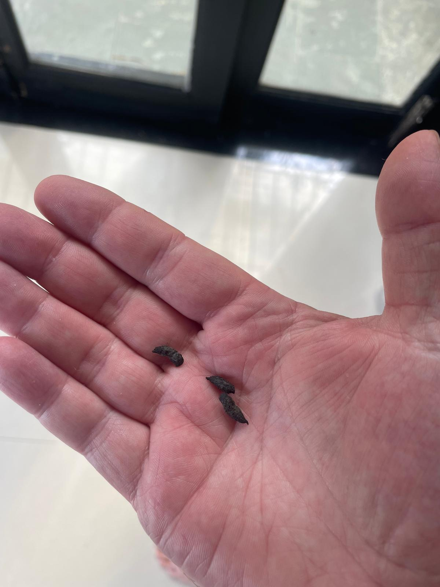
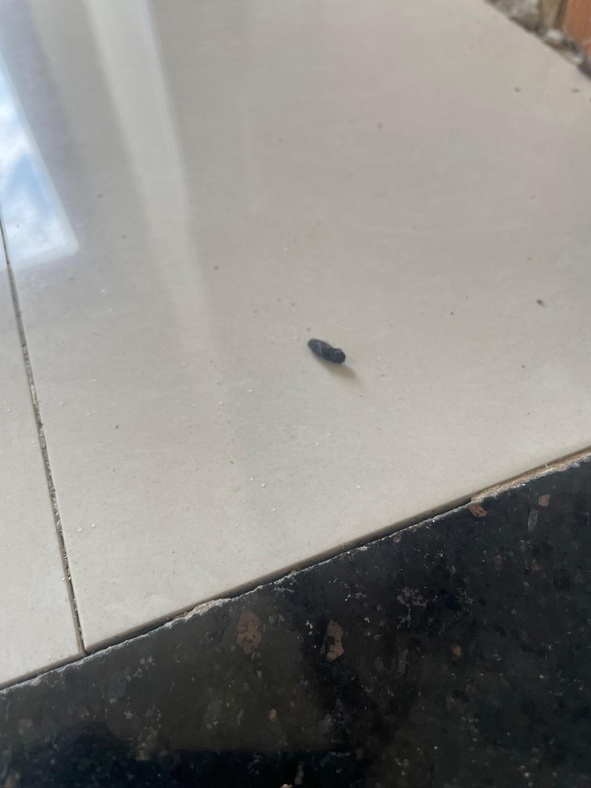
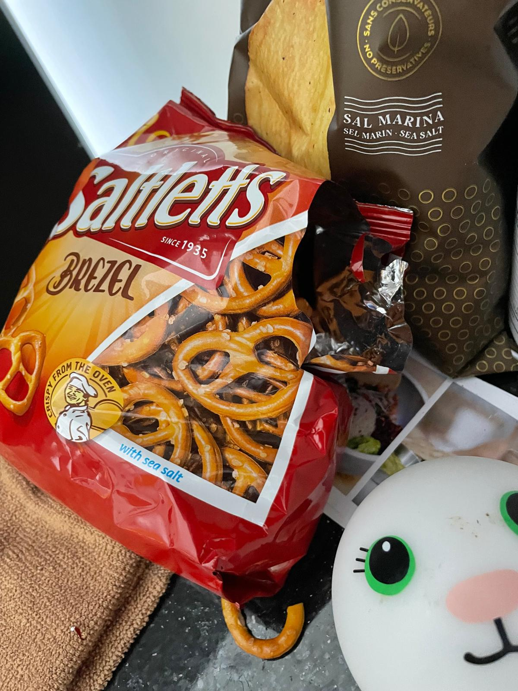
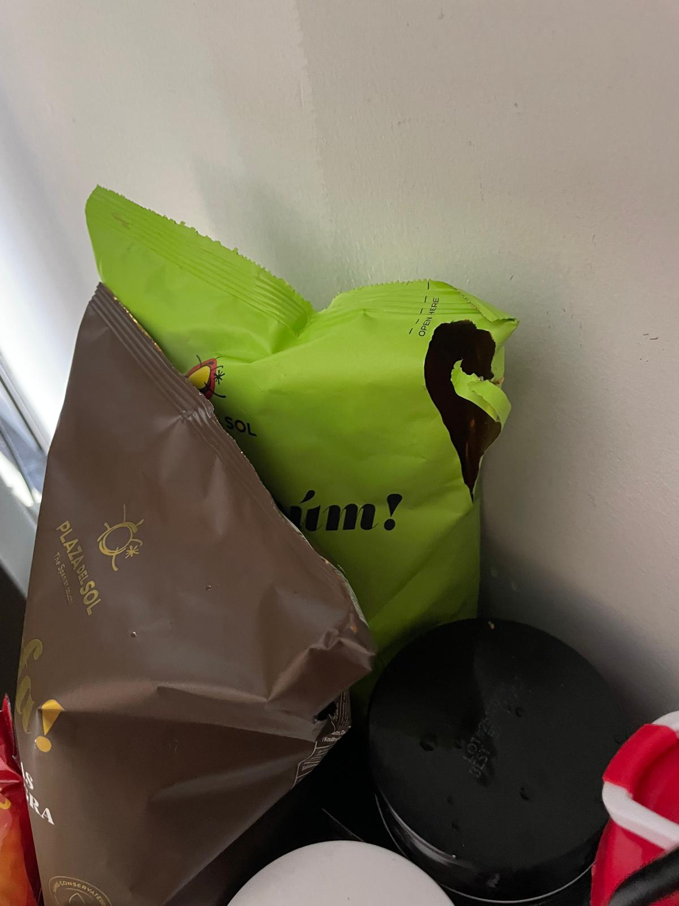
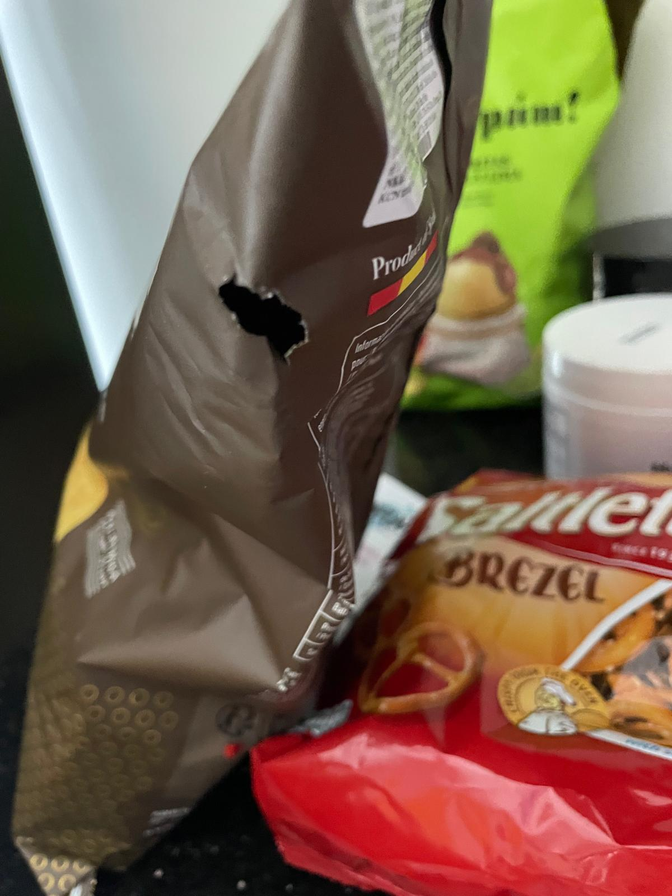
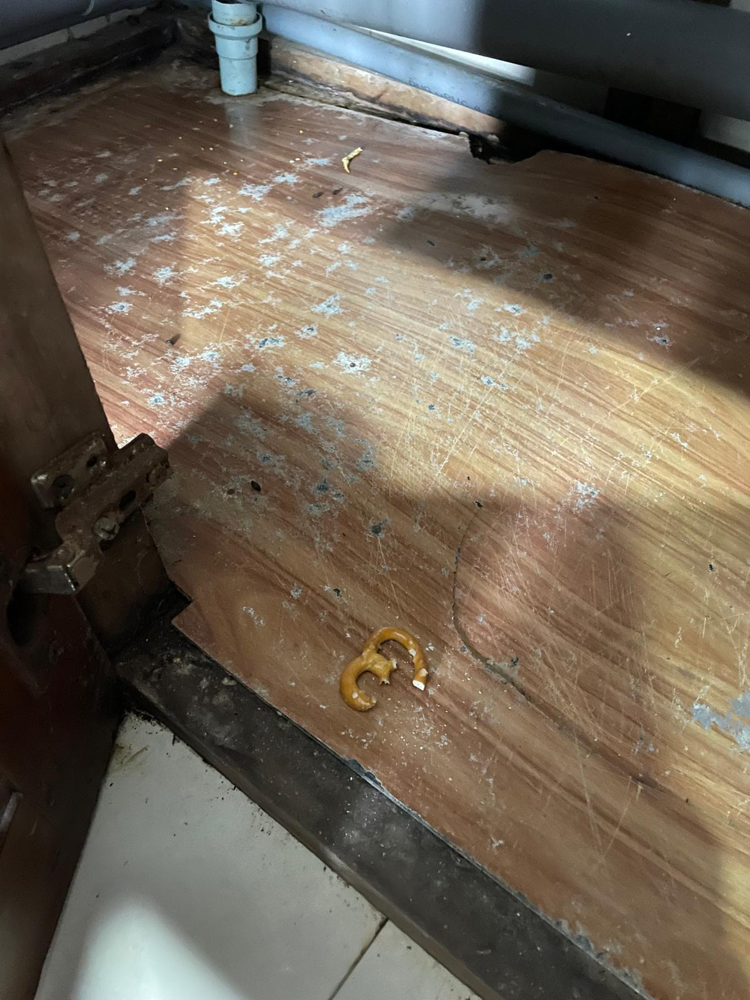

Before our current house — with our wonderful landlord and his lovely family living next door — there was The Rat House.
It was the second place we rented here in Hội An. Before that we spent a month in a small, lodge-esque place in Cửa Đại, run by another lovely local family. It could only ever have been short-term — essentially a single room with a small mezzanine where E and e slept — but it saw us through most of the rainy season. Well, almost: I spent one mostly sleepless night when Hội An bore the brunt of Typhoon Kalmaeigi, quietly convinced the whole treehouse-type structure was about to tip over. When it was time to move on, we found an actual house to rent in the Cẩm An area. Traditional by Vietnamese standards in certain ways — the downstairs bedroom had no windows but did regularly host cockroaches (who nearly always defaulted on their rent), and the bathrooms were functional but nowhere you'd want to linger. We were there for just over a month.
And then came The Rat House.
Initially, of course, we didn't call it that — 'cos we didn't know. The rent was a jump from what we'd been paying, but on the other hand, it was a hell of a house — the kind of place that's definitely worth trying, given the rental here is roughly a quarter to a fifth of what it would be in the UK. Six bedrooms, a pool, a huge roof terrace with generous views across to the river. Apologies, I sound like I'm turning into an estate agent — which, coincidentally, we've found to be universally uncaring, profit-driven liars, for the most part, whether they reside in Hội An or Halifax.
The first red flag was the fuss the landlord made over replacing the rusty, rocky, filthy fridge. Our first house had come with a mostly-new, very clean one; here it was more of a 'left on the side of the road' model. He eventually replaced it — with a slightly less rusty, less rocky version. As there usually is when moving into somewhere not brand-new, there were several issues, some medium-to-major, others small-to-medium. To be fair, the landlord got most of these sorted within the first few days: locks replaced, a chair deep-cleaned, access to the security cameras.
But over those first few days — amongst the unpacking and getting used to a new environment — I repeatedly came across something that looked suspiciously like rat shit.
Ah.
I was hoping it was old evidence of an old problem, or maybe just the odd one that would be scared off by the new tenants. Us.


Until one evening, when we were watching TV, our youngest — e — suddenly blurted out, 'Rat! A rat!' Sure enough, with a sinking feeling, I turned, and sure enough: there was Roland, sitting on the stairs, possibly trying to join in with our family evening. I can't remember what I grabbed to try and trap it — a bowl or something — but I didn't get anywhere near before it scarpered, high-tailed (literally) it into the lounge, and vanished behind the huge, solid wooden TV cabinet. After much banging and pushing stuff into the cracks, it had had enough, made a break for it through the lounge and open-plan kitchen and, fortunately, straight out of the open door. And don't come back!
Roland had friends.
Over the next few days we heard them in the walls, saw one on top of an air-con unit, and — worst of all — found evidence of them in our kitchen. Sealed packets chewed open and dragged across the floor. More droppings.




I won't go into the back-and-forth we had with the landlord over this, but suffice to say our argument — that it was a major hygiene issue, given the rats were in our kitchen and getting into our food — wasn't deemed important enough. And that, in just over a week of living there, was that for The Rat House. Communications, negotiations and agreements with the landlord and the agent followed, and on the very day of my birthday, we found ourselves without a permanent residence.
Our first visa run was coming up in a couple of days — we were due to fly to Kuala Lumpur for a week — so we checked into a guesthouse literally up the road from The Rat House, and had a relaxing few days where we could reassuringly put the air-con on with no fear of a little rat-head poking out.
And no rat shit.
— J ✻